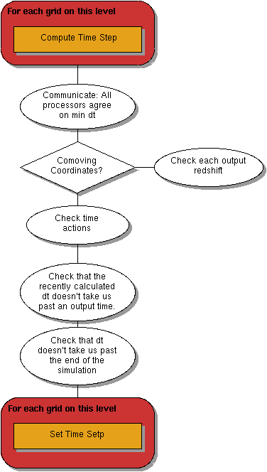

<map name="DetermineDT">
<area shape=rect coords="20,596, 200,632" href="https://github.com/enzo-project/enzo-dev/tree/master/src/enzo/Grid.h#L207">
<area shape=rect coords="20,38, 200,74" href="https://github.com/enzo-project/enzo-dev/tree/master/src/enzo/Grid_ComputeTimeStep.C">
</map>
